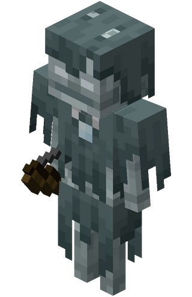

Spawn: Lichtlevel von maximal 0, Vereister Fluss, Verschneite Ebene, Eiszapfentundra, Vereister Ozean, Vereiste Tiefsee, Prüfungs-Spawner, Unheilvoller Prüfungs-Spawner
Herzen: 20
Höhe: 0,99 Blöcke
Breite: 0,6 Blöcke
Drop: Pfeile, Pfeil der Langsamkeit, Knochen
Erfahrungspunkte: 5
Seit: Version 1.10
Angriff: Er schießt mit Pfeilen der Langsamkeit. Wenn sein Bogen kaput ist, ist er, anders als Plünderer nicht harmlos und macht noch bis zu 3 Herzen Schaden.